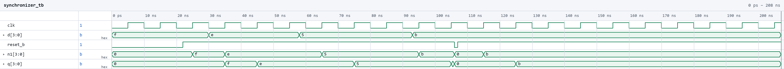
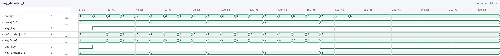
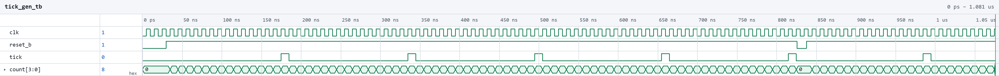
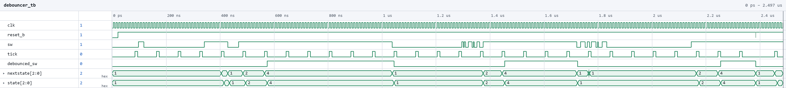
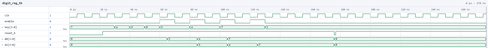
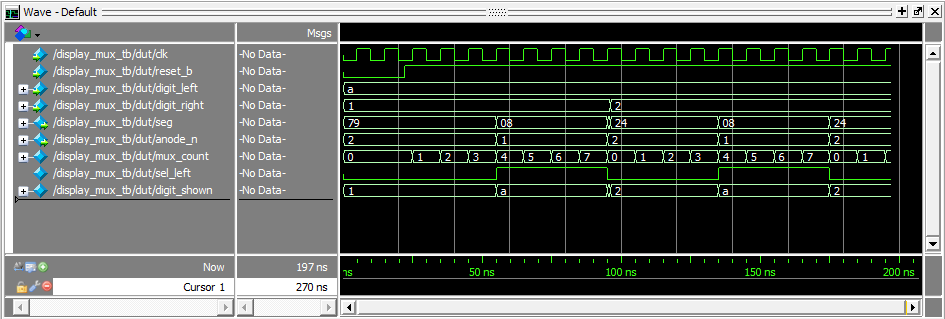

Lab 3: Keypad Scanner
Introduction
In this lab, a design was implemented on the FPGA that reads a 4x4 matrix keypad and shows the last two hexadecimal keys pressed on the dual seven-segment display from Lab 2, with the most recent key on the right. Each keystroke registers exactly once no matter how long it is held. Switch bounce is filtered out, and extra keys pressed while one is already held are ignored. When all but one of several held keys are released, the key still held is registered.
Most of the Lab 2 design was reused. The Lab 2 row scanner, counter, seven-segment decoder, and multiplexing logic carry over unchanged. New logic was added to synchronize the asynchronous column inputs, debounce the key readings, decide when a press should be registered, and store the last two digits. As in the previous labs, the design was written in SystemVerilog, verified in simulation with QuestaSim, and synthesized in Lattice Radiant for the iCE40 UP5K.
Design and Testing Methodology
Design Overview
The keypad rows are driven one at a time through 2N3904 low-side transistors, and the columns are read back through pull-up resistors. A pressed key connects its row to its column, so while its row is driven the column is pulled low. Because the transistors invert, the FPGA drives its row pins one-hot high so that exactly one keypad row is pulled low.
The whole design runs on the 48 MHz HSOSC clock. Slower rates (row scanning, debounce sampling, and display multiplexing) are produced as one-cycle enables or counter bits.
Modules
Reused unchanged from Lab 2 (counter, scanner, and sevenseg_decoder are identical to the Lab 2 source):
- counter.sv: Parameterized counter with enable and asynchronous active-low reset that wraps at MAX. It is used in scanner, tick_gen, and display_mux.
- scanner.sv: Lab 2 row scanner. It counts to 4*DIV and decodes a one-hot row pattern. Its enable is now driven by the keypad controller so that it can be halted on the row of a pressed key.
- sevenseg_decoder.sv: Maps a hex nibble to an active-low segment pattern.
New in Lab 3:
- synchronizer.sv: A two-flop synchronizer on the four asynchronous column inputs.
- key_decoder.sv: Combinational decode of the (row, column) reading into a hex value, plus two status bits.
- tick_gen.sv: A free-running counter that pulses a one-cycle tick strobe every 2^TICK_W cycles.
- debouncer.sv: A three-state FSM (IDLE/WAIT/PRESSED) that samples its input on the tick strobe
- keypad_ctrl.sv: The keypad controller FSM (SCAN/PRESS/HOLD/MULTI). It contains the tick generator, both debouncers, and the Lab 2 scanner, and it registers the active-low row pattern. It also delays that pattern by the synchronizer depth (SYNC_DEPTH = 2) to produce
rows_aligned, so each synchronized column reading is decoded against the row that was driven when it was taken. - digit_reg.sv: A two-digit shift register.
- display_mux.sv: The Lab 2 multiplexing logic packaged as a module. The MSB of a counter selects the left or right nibble, drives a single shared decoder, and picks the anode.
- lab3_GA.sv: The top level. It contains only the HSOSC, module instances, and the
key_newcompare (key != d0).
FSMs
The design is split into communicating state machines, following the controller/counter pattern from lecture.
- Scanner ↔︎ controller. The scanner steps through the rows. The controller sends scan_en down to it, which is high only in SCAN while no raw key reading is present. The raw any_key reading acts as the signal coming back up. As soon as a column reads low, the scanner freezes on that row, so the key’s reading stays present while it is being debounced.
- tick_gen → debouncers → controller. tick_gen is a counter that sends a strobe to both debouncers. The debouncers pass clean key_down and single_key levels up to the controller.
- Controller → datapath. The controller’s only output is the one-cycle capture pulse. That pulse is the enable for digit_reg, the plain datapath register holding the last two digits.
Switch Debouncing Strategy
Rather than debouncing the four raw column bits, the design debounces the two conditions the controller actually branches on: “a key is down” and “exactly one key is down” (one_key). Each debouncer samples its input only on the tick strobe:
- IDLE → WAIT when the input is high at a tick.
- WAIT → PRESSED at the next tick, but only if the input stayed high on every clock cycle in between. Any low cycle (a bounce) returns to IDLE.
- PRESSED → IDLE on the first low cycle.
A press is therefore accepted only after it has been continuously stable for at least one full tick period. That is 10.9 ms, longer than the few milliseconds that contact bounce lasts. The release is not debounced, which makes the controller react to releases immediately. Release bounce cannot cause a second registration, because re-entering PRESSED needs another full tick-to-tick window of stable contact, which a bounce cannot provide.
Multiple Key Presses
The scanner halts on the row of the first key detected, so keys pressed later in other rows are never seen while the first is held. A second key in the same row makes one_key drop, and the controller moves from HOLD to MULTI without registering anything. From MULTI, the controller registers again only when exactly one key is left down and that key differs from the digit already on the display. This means releasing all but one key shows the remaining key, while releasing back to the key that was already registered does not register it twice.
Because the scanner stops on the first row where it sees a key, two keys in different rows pressed at the same moment (for example 8 and 5, which share a column) look like a single key. The key in whichever row the scanner reaches first is registered, and the other is ignored until the first is released. Releasing it sends the controller back to SCAN, the scanner resumes, finds the key that is still held, and registers it after the normal debounce.
Technical Documentation
The source code, testbenches, and AI prototype code for this lab can be found in this GitHub repository.
Block Diagram

Figure 1 shows the top-level module and the keypad_ctrl submodule.
Schematic

Figure 2 shows shematic including the keypad with column pull-ups, the 2N3904 row drivers, and the dual seven-segment display with its anode transistors and segment resistors.
Results and Discussion
The design was programmed onto the FPGA and tested on the breadboard. Each key displayed the correct hex value, the newest digit appeared on the right with the previous one shifted left, and each press registered exactly once however long it was held. Holding one key and pressing others had no effect, and releasing all but one key displayed the remaining key. Both digits were steady with equal brightness and no flicker.
Testbench Simulation
The following simulations were run in QuestaSim to verify the design before programming it onto hardware.

Figure 6 shows the synchronizer. Its output is 0 while reset is held. Each new value on d (f, e, 5, b) shows up on the first flop n1 after one clock edge and on the output q after two. The reset pulse near 105 ns clears both flops, and the held value b passes through again once reset is released.

Figure 7 shows the key decoder. With no column pulled low, any_key and one_key are both low. Each row (e, d, b, 7) is then driven against each single column, and key steps through the keypad layout 1, 2, 3, A / 4, 5, 6, B / 7, 8, 9, C / E, 0, F, D, with one_key high. At the end, two keys, four keys, and a non-adjacent pair of columns in the same row keep any_key high but drop one_key.

Figure 8 shows the tick generator with a small TICK_W. tick is low during reset, and after that it pulses for exactly one cycle each time count reaches its last value. The reset pulse near 820 ns sends count back to 0, and the next tick comes a full period later.

Figure 9 shows the debouncer (state 1 = IDLE, 2 = WAIT, 4 = PRESSED). A short glitch between ticks never leaves IDLE, and a press that drops before the next tick falls back from WAIT to IDLE. A press held across two ticks goes IDLE -> WAIT -> PRESSED and raises debounced_sw, and releasing it drops back to IDLE right away. The bouncy press and release near 1.3 us and 1.7 us each produce only one rising edge on debounced_sw. The last press is cleared by a reset while in PRESSED.

Figure 10 shows the keypad controller. The rows rotate one-hot every SCAN_DIV cycles until a key is seen, and the scanner then halts on that row. A single press of 8 produces one capture pulse. With 8 and 5 held together, releasing 8 leaves 5 down, which is then captured once.

Figure 11 shows the digit register. After reset both digits are 0, and they hold while enable is low even though key changes. Each enable pulse shifts the new key into d0 and the old d0 into d1 (5, then A, then F), and the oldest digit drops off. Entering F a second time fills both digits with F, and the reset near 175 ns clears the display back to 00.

Figure 12 shows the display multiplexer. digit_sel toggles every half period of mux_count, and anode_n switches between the two digits with it, so exactly one anode is on at a time. nibble alternates between digit_left and digit_right, and seg carries the decoded pattern. digit_left steps 0 to F and digit_right steps F to 0, covering all 16 hex values on both digits. Holding F/0 shows equal on-time for each digit. When digit_left changes to E, seg updates right away, and the display resets near 2.05 us.
Conclusion
The design reads a 4x4 keypad and displays the last two keys pressed. It registers every press exactly once, filters out switch bounce, and handles multiple simultaneous presses. It reuses the Lab 2 scanner, counter, and display logic without modification. I spent a total of 20 hours working on this lab.
AI Prototype Summary
For this lab’s AI prototype, I compared a single monolithic prompt against the three decomposed prompts. Both prototypes compiled with zero errors and zero warnings in QuestaSim. Without being told to, Prototype A split itself into four modules (tick_gen, keypad_scanner, display_mux, and a top level) in one file. That is close to how I partitioned my own design. The main difference is that it merged scanning, debouncing, and single/multi press into a single FSM. Prototype B’s prompts forced the split I would have chosen (a scanner FSM and a separate one-shot FSM). Each module on its own was cleaner and better commented. Overall, the monolithic prompt produced a clear whole system while the decomposed prompts produced better individual modules. Decomposing only pays off if each prompt also states the interface contract with the modules around it and how the downstream module must react. Next time I would decompose, but give each prompt the other modules’ ports and timing assumptions, plus the board’s physical row/column wiring and other information like polarity.